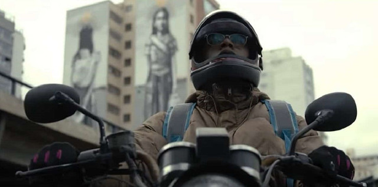

Liniker
Cassandra

Karine Teles
Leide

Gustavo Coelho
Gersinho
Manhãs de Setembro conta a história de Cassandra (Liniker), uma mulher trans que trabalha como motogirl em São Paulo e que tem na música sua maior força. Ela precisou abandonar sua cidade para realizar seu sonho de se tornar cover de Vanusa, cantora brasileira que fez sucesso na década de 70. Após anos de muito sofrimento, Cassandra vive agora um momento de estabilidade: ela consegue alugar um apartamento só seu e descobre o amor na figura de Ivaldo (Thomas Aquino). Contudo, tudo se complica quando sua ex-namorada, Leide (Karine Telles), reaparece com um menino que diz ser seu filho.
Cassandra
Leide
Gersinho
Cassandra (vivida por Liniker) é uma jovem determinada e em busca de realizar sonhos na capital paulista. Na superfície, tudo vai bem. O aluguel de uma quitinete é aprovado, o romance com seu namorado vai ficando sério, e seus melhores amigos lhe dão conselhos e um palco para chamar de seu. É na boate do casal Aristides (Gero Camilo) e Décio (Paulo Miklos) onde ela se realiza e canta, assim como Vanusa - musa inspiradora, cuja canção “Manhãs de Setembro” inspira a personagem a buscar mais da sua vida (e, de quebra, ainda dá título à produção).
Mas tudo muda com a chegada de Leide (Karine Telles), a mulher com quem Cassandra se envolvia antes da transição, uma sem-teto que vive como camelô e mora num carro velho. Além do antigo relacionamento, a protagonista logo descobre que ambas dividem algo a mais: a responsabilidade de um filho, o Gersinho (Gustavo Coelho), cuja existência nem passava pela cabeça de Cassandra.
Prestes a completar 10 anos, o menino só queria conhecer seu verdadeiro pai. Por isso, Leide bate à porta de sua ex - ou não só por isso, mas também para buscar a sua liberdade, a possibilidade de viver sem tanto peso sobre os ombros, tal como Cassandra. É nesse conflito que se concentra a verdadeira história de Manhãs de Setembro. Ao mostrar duas formas de maternidade, a série deixa de lado a obrigação de ser um retrato de representatividade, embora faça isso de forma autêntica e muito otimista.
Liniker de Barros Ferreira Campos conhecida como Liniker (Araraquara, 3 de julho de 1995) é uma cantora, compositora, atriz e artista visual brasileira da banda Liniker e os Caramelows. Também compõe e canta músicas de gênero soul e black music.